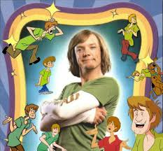

Thank you for the sacrifice
IT IS DONE! THE LORD AND SAVIOR SHALL RISE ON THE DAWN OF THE 13TH BLOOD MOON AND THE WORLD SHALL SEEP IN BLOOD!!!!!!
Thank you for your noble sacrifice, and please, pay omen to all His previous lives in this beautiful collage.
